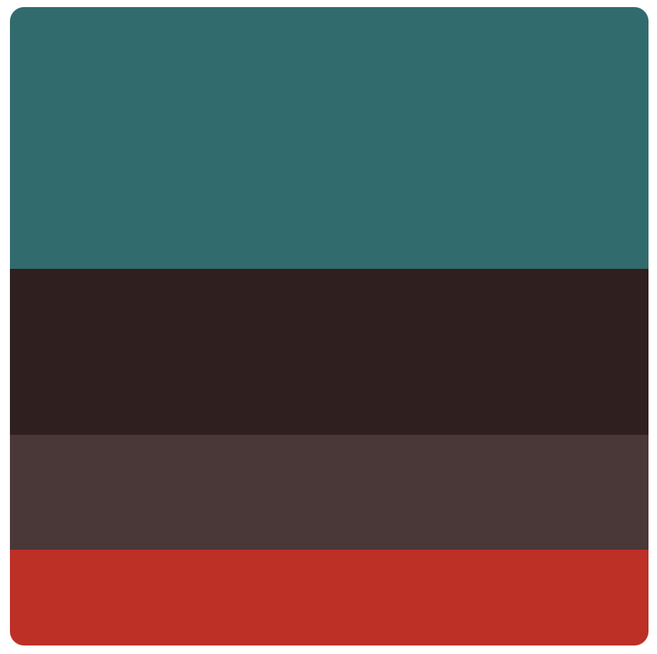

A Two Day Build
Sometime last week I decided to make a short software project as a palette cleanser amidst other work that I was doing. The criteria that I set was
- It had to be short, probably 24 Hours
- It had to be simple, so that it can be completed within said time.
With that complete, I began.
Step 1: Foundation
To start with I decided what I had to build. I chose a project I had been thinking about for a while and went with it, because there were no rules.
Recently I had become aware of the Lists feature on the IMDB website. It allows you to keep lists of Movies or TV shows based on whatever criteria you like. After adding enough items to the list I began to wonder how my taste in the shows I watch actually appeared statistically. So I decided to utilise the export feature to represent that data in some simple visual elements.
Step 2: Problem Boundaries
Given that the project had to be completed within the set time frame, I had to reduce the complexity of the problem. So instead of trying to implement all possible features I chose a few: -
- Represent the data downloaded in some easily understandable graphs.
- Make the site visually appealing enough so that it is usable by others on the internet.
- Do not work on authentication or per-user data as it is time consuming to debug and handle.
- Try to avoid the use of a server for actions on data since most operations may be simple enough to complete via the frontend.
Step 3: Defining the Pieces
With the above points in mind, I chose the tools I would use for the project.
Frontend 💻
For the frontend I chose Angular since I had the longest experience with it and I wanted to utilise their latest Material Themes update which gave a flexible method to design themes of any kind. Using a pre-existing design framework allowed me to relax my focus on the CSS side of things but keep things visually appealing.
Data 📄
I did not need a stored dataset of any kind as I would be working solely on the user’s input CSV file.
Visual Representation 📊
Since a major part of the project was visual representation of user’s data, I had to choose a library in angular that supports said task. This step took a while as I had to try multiple libraries and check what worked with the current set up of angular (version 18) I was working with. After various tries I stuck with the ng2-charts library. It had good documentation on how to work with it, and also a good variety of graphs.
 https://www.npmjs.com/package/ng2-charts
https://www.npmjs.com/package/ng2-charts
UI Design
Colours
This step is often optional but it is a step that I like thinking about. So the first thing I usually find is the colour scheme for the app. I usually use colorhunt for choosing the scheme.

Since my app was related to movies and films, I though of choosing a palette that gave the vibes of old theatre furnishings.
{kind=link}

While this step is in no way my forte, I stuck with my choice and went ahead with the next steps.
Elements
After choosing the colours of my application, I had to choose the order and orientation of the information I will insert in the site. Since the application is quite simple, this step was quite easy. I divided the site into the following parts: -
- Introduction: This portion would consist of a basic catchy description of the app itself.
- Data Input: This part would consist of UI that is dedicated to taking inputs from the user. This is a small but important part of the app.
- Data Representation: Once the data is input by the user, after it is parsed, the relevant graphs and tables can be displayed in this part.

Step 4: The Journey
With all the pieces set, I could now start with the implementation. But before that, I set up version control on Github to keep my future additions safe.
The first thing I worked on was the file uploading component. All it requires is an html form with a file input and a way to parse the contents of the CSV file and read it into a user defined class depicting a row of data. I created the user defined class by inspecting the downloaded CSV from the IMDB website.
Once the data was parsed, it had to be stored at least until the next component needs to use the data. Since I was implementing this without a server or a database, I did this using localStorage. This allows saving data in key value pair format locally within the browser. Thus I stored a list of Movie objects in localStorage. One benefit this provides is that the list of movies is present in the browser until the user clears it.
Once the data was loaded, I used it to plot various graphs. For deciding the basis for various plots, I look at the available columns. After that I just needed to insert relevant parameters in the graph library.

This part of the process took some time because of certain differences in how my data was structured and how they expected the data to be structured. Once the difference was cleared, it was just the matter of inserting values and placing divs.
Once all the data interpretation and representation was working, I moved on to the introduction part. While this part too was hardly necessary, it makes the simple website look more like a product.
The first thing I did was design a logo. Using the trusted graphic design software, Canva, I placed simple elements and came up with something that was alright for a logo, at least temporarily.

Then I placed the icons in places that require branding, like the toolbar.

The name of the site was just a process of trial and error of various rhymes and puns.
Next I prepared a simple catchy image with familiar names and faces.

And finally I placed various text blocks to give a gist of what the site is about. And with that, I completed the basic structure of the site.

Step 5: Final Destination
Now remained the final step of deployment. This had to be done in the final hours that remained in my allocated 24 hours. For the amount of time I had spent, the output looked descent so without many second thoughts, I began searching for hosting options.
Again, since it was server-less, I did not need to worry about many complications during deployment. Plus the application would not incur much expense until traffic to the site increased by a drastic amount. So first, I tried Vercel.
I remembered Vercel being the choice of deployment software in an angular book I read years ago, so I tried it.
Unfortunately, even after multiple attempts, no dice. Each deployment failed at the build step even though the build worked in my local environment.

I could continue to debug and fix the problem. However, nothing stopped me from taking the easy way out so I took it. I went to Firebase.
But, once I setup the deployment environment as per firebase rules and completed the deployment, I remembered the issues I had with it in the past.
In its automatic build configuration, firebase rewrites the index.html of the project with its own. I am yet to understand the root cause of this issue. However, for the time being I disabled automatic build in the firebase deploy config and did the build manually.
Finally the site deployed, successfully.
But, like with any software, It had bugs. So even though my 24 hours were over, I spent an extra day debugging. But then finally, It came to an end.
Final Thoughts
This project was one that I was putting off for quite a few months since it gave me no benefits of completing and never seemed important.
However, after completing it on a small scale, I can now review its usage and take calculated steps on adding features.
After working with relevant libraries I was able to gauge the feasibility of such a project.
Overall, It was fun to make something end-to-end, even if it was small and if it gains traction, I would work on it and make it better.
Here is the final working app.
 http://playlens.web.app
http://playlens.web.app
Thanks for reading and my inbox is open for suggestions!